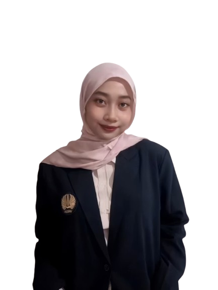
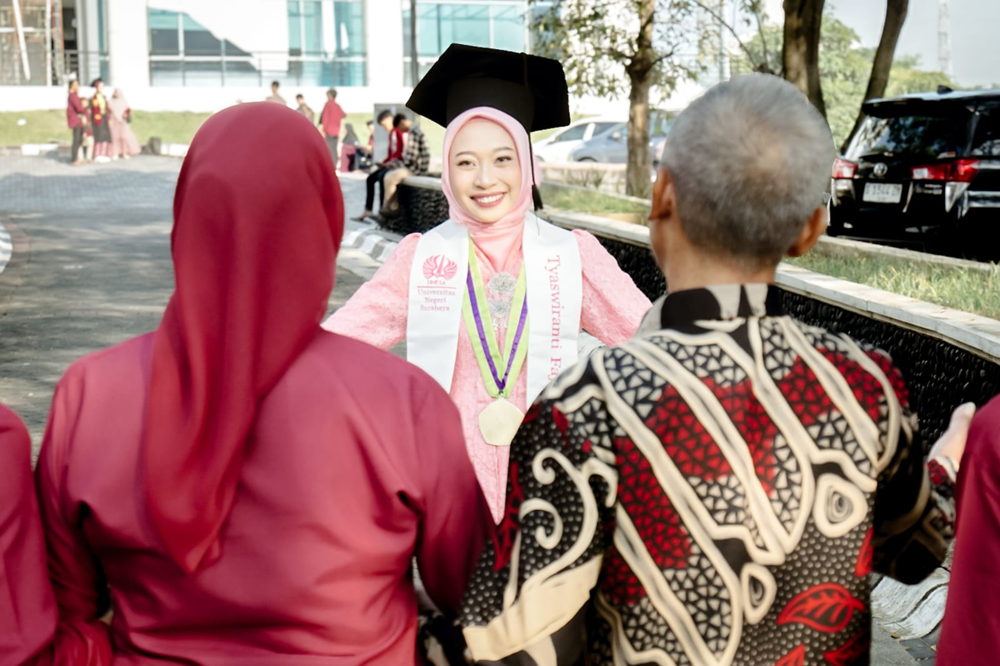
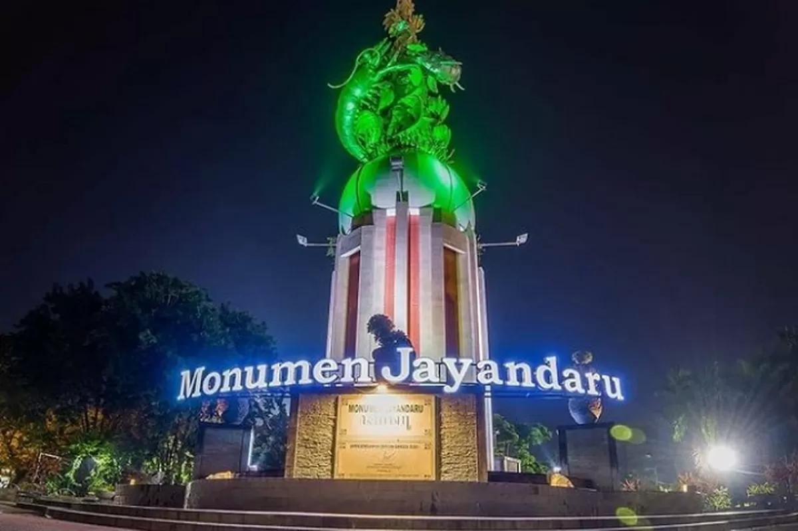
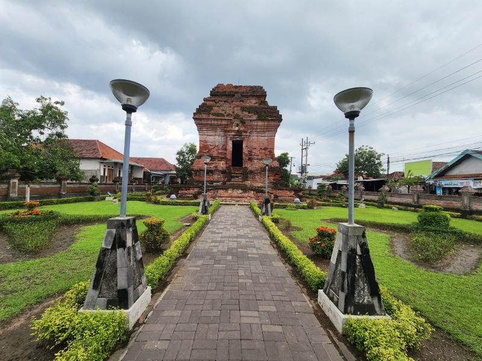
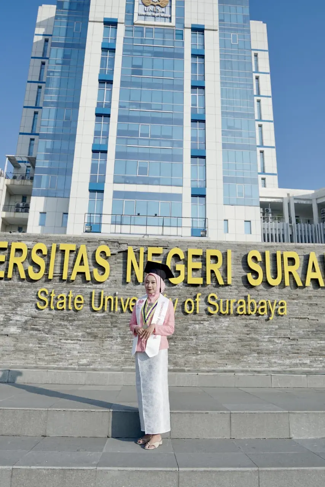
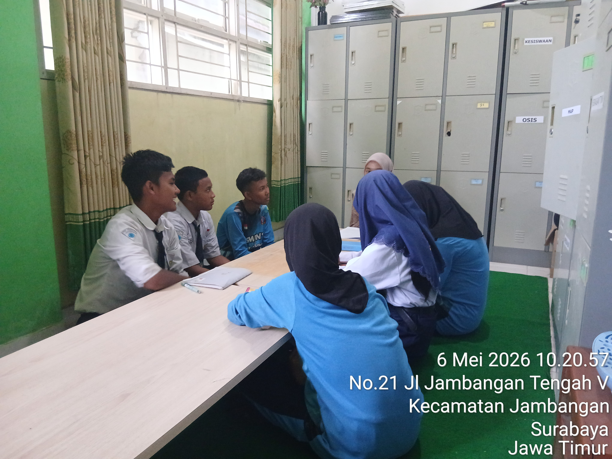
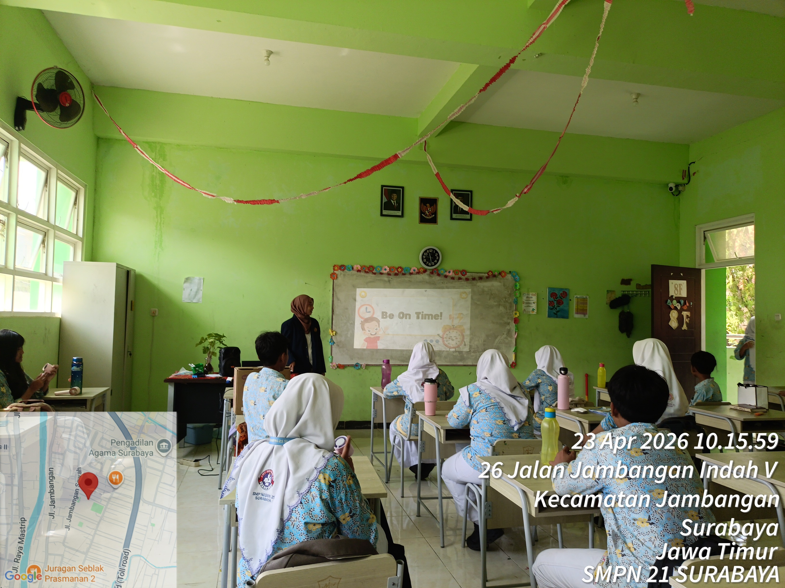
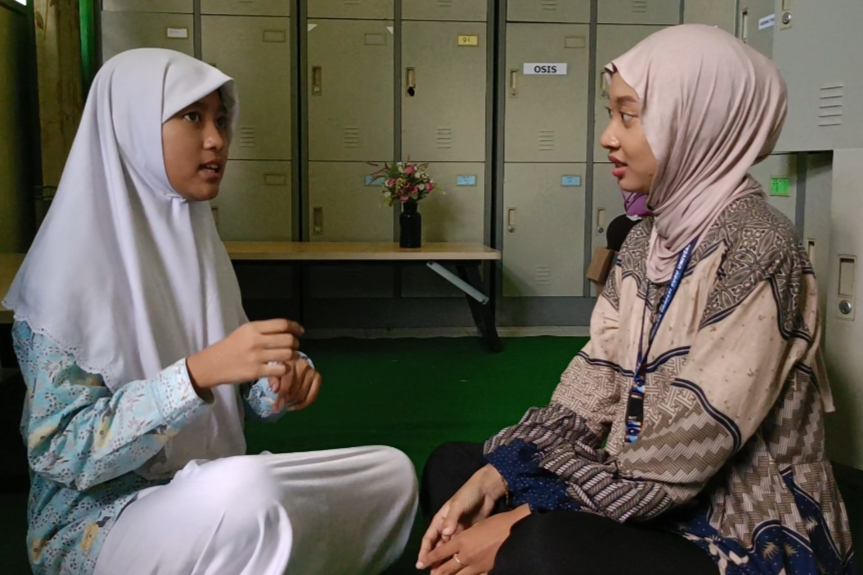

2026

TYASWIRANTI FAJRINA
NIPD: 2500103916810040
Gedung W1 LP3, Kampus Unesa II Lidah Wetan,
Jl. Lidah Wetan, Surabaya
Jl. Jambangan Blk. 4, Jambangan, Kec. Jambangan,
Surabaya, Jawa Timur

Halo! Saya Tyaswiranti Fajrina, biasa dipanggil Ranti. Saya berasal dari Sidoarjo, Jawa Timur, dan memiliki minat besar di bidang pendidikan serta pengembangan diri. Saya percaya bahwa proses belajar tidak hanya terjadi di dalam kelas, tetapi juga melalui pengalaman, tantangan, dan kesempatan untuk terus berkembang.
Sebagai seseorang yang senang mempelajari hal-hal baru, saya selalu berusaha menjalani setiap proses dengan semangat, rasa syukur, dan keinginan untuk memberikan manfaat bagi orang lain. Bagi saya, pendidikan adalah tentang bertumbuh, berbagi, dan menciptakan dampak positif melalui ilmu dan pengalaman.

Sidoarjo merupakan salah satu kabupaten di Jawa Timur yang dikenal sebagai Bumi Jenggala. Daerah ini memiliki perpaduan unik antara perkembangan industri modern, kekayaan budaya, serta kehidupan masyarakat yang masih menjunjung tinggi nilai kebersamaan dan gotong royong.
Selain terkenal sebagai penghasil udang dan bandeng, Sidoarjo juga memiliki beragam kuliner khas, sentra UMKM yang berkembang, serta berbagai destinasi wisata yang menjadi bagian penting dari identitas daerah. Keberagaman tersebut mencerminkan potensi lokal yang terus tumbuh dan beradaptasi dengan perkembangan zaman.
Tradisi, keramahan masyarakat, dan semangat kerja keras yang dimiliki warganya menjadikan Sidoarjo sebagai daerah yang tidak hanya maju secara ekonomi, tetapi juga kaya akan nilai, karakter, dan kearifan lokal yang tetap terjaga hingga saat ini.

Ketertarikan saya pada dunia pendidikan tumbuh dari lingkungan keluarga yang dekat dengan profesi guru. Sejak kecil, saya melihat bahwa seorang guru bukan hanya mengajar di kelas, tetapi juga membimbing, mendengarkan, dan menjadi bagian penting dalam proses tumbuh kembang murid.
Bagi saya, menjadi guru bukan sekadar menyampaikan materi pelajaran, tetapi juga menciptakan ruang belajar yang nyaman dan mendukung setiap murid untuk berkembang sesuai potensi yang dimilikinya.
Saya percaya bahwa setiap murid memiliki cerita, kemampuan, dan cara belajar yang berbeda. Karena itu, saya ingin menjadi pendidik yang tidak hanya hadir sebagai pengajar, tetapi juga sebagai sumber motivasi, inspirasi, dan pengalaman belajar yang bermakna.


Vision & Purpose
Tujuan saya menjadi seorang guru adalah untuk berkontribusi dalam membentuk generasi yang tidak hanya cerdas secara akademik, tetapi juga memiliki karakter, empati, dan nilai-nilai kehidupan yang baik. Bagi saya, pendidikan merupakan proses penting dalam membantu seseorang mengenali potensi diri, membangun kepercayaan diri, serta mempersiapkan masa depan yang lebih baik.
Saya percaya bahwa seorang guru memiliki peran lebih dari sekadar menyampaikan materi pelajaran. Guru juga menjadi pembimbing, pendengar, motivator, dan teladan bagi murid dalam proses tumbuh dan berkembang. Karena itu, saya ingin menjadi pendidik yang mampu menciptakan suasana belajar yang nyaman, menyenangkan, dan menghargai perbedaan kemampuan maupun latar belakang setiap murid.
Melalui profesi ini, saya berharap dapat memberikan dampak positif bagi lingkungan sekitar serta membantu murid berkembang secara optimal dalam meraih cita-cita mereka.
Karakter
Pembimbing
Inspirasi
“Saya ingin hadir sebagai guru yang tidak hanya mengajarkan ilmu, tetapi juga membantu murid menemukan potensi terbaik dalam dirinya.”

Artefak produk disusun pada pelaksanaan PPL Terbimbing di SMP Negeri 21 Surabaya untuk murid kelas VIII. Berdasarkan hasil asesmen kebutuhan, ditemukan bahwa sebagian murid masih mengalami kesulitan dalam mengelola waktu dan menentukan prioritas kegiatan sehari-hari sehingga berdampak pada munculnya kebiasaan terlambat. Oleh karena itu, layanan bimbingan klasikal dirancang menggunakan permainan Running Pyramid dan media digital agar pembelajaran menjadi lebih menarik, aktif, dan bermakna bagi murid.
Artefak produk layanan bimbingan klasikal bertujuan membantu murid mengidentifikasi kegiatan produktif dan kurang produktif, mengevaluasi penggunaan waktu yang telah dilakukan, serta merancang jadwal kegiatan yang lebih efektif melalui penerapan manajemen waktu dalam kehidupan sehari-hari.
Kendala yang dihadapi dalam penyusunan produk ini adalah menentukan aktivitas yang mampu menggambarkan konsep manajemen waktu secara konkret serta memilih media yang sesuai dengan karakteristik murid kelas VIII. Selain itu, diperlukan pengaturan alokasi waktu yang tepat agar seluruh tahapan layanan dapat dilaksanakan secara efektif sesuai dengan tujuan yang telah ditetapkan.
Keberhasilan layanan didukung oleh penggunaan metode experiential learning yang membuat murid terlibat secara aktif dalam proses pembelajaran. Permainan Running Pyramid mampu meningkatkan motivasi dan antusiasme murid selama mengikuti layanan. Materi yang diberikan sesuai dengan kebutuhan murid sehingga lebih mudah dipahami dan diterapkan dalam kehidupan sehari-hari. Selain itu, adanya kegiatan refleksi dan evaluasi melalui Quizizz membantu murid memahami pentingnya pengelolaan waktu yang efektif.
Produk layanan bimbingan klasikal memiliki beberapa kelebihan, yaitu penggunaan metode yang melibatkan murid secara aktif melalui permainan Running Pyramid sehingga suasana layanan menjadi lebih menyenangkan. Selain itu, penggunaan platform Quizizz sebagai media evaluasi berbasis teknologi dapat meningkatkan motivasi dan keterlibatan murid. Materi yang diberikan juga bersifat kontekstual karena berkaitan dengan permasalahan yang sering dialami murid. Tujuan layanan disusun secara sistematis mulai dari aspek pengenalan, akomodasi, hingga tindakan sehingga memudahkan pencapaian kompetensi yang diharapkan.
Produk layanan bimbingan klasikal masih memiliki beberapa keterbatasan. Pelaksanaan layanan memerlukan waktu yang cukup panjang karena terdiri atas beberapa tahapan aktivitas. Selain itu, penggunaan media digital membutuhkan sarana pendukung seperti koneksi internet dan perangkat elektronik yang memadai. Permainan yang digunakan juga memerlukan pengelolaan kelas yang baik agar kegiatan tetap kondusif. Tingkat partisipasi murid yang berbeda-beda dapat mempengaruhi ketercapaian tujuan layanan.
Kajian Teori dan Teori Pedagogi yang Diadopsi: Produk mengadopsi teori Experiential Learning yang dikembangkan oleh David Kolb. Teori tersebut menjelaskan bahwa pembelajaran akan lebih bermakna apabila murid memperoleh pengalaman secara langsung, melakukan refleksi terhadap pengalaman tersebut, memahami konsep yang berkaitan, kemudian menerapkannya dalam kehidupan sehari-hari. Tahapan Aktivitas, Refleksi, Konsep, dan Aplikasi yang digunakan dalam layanan merupakan implementasi dari siklus pembelajaran experiential learning.
Selain itu, produk ini juga didasarkan pada teori konstruktivisme yang menyatakan bahwa pengetahuan dibangun melalui pengalaman dan interaksi dengan lingkungan belajar. Pendekatan yang digunakan sejalan dengan konsep deep learning yang menekankan pembelajaran yang bersifat mindful, meaningful, dan joyful. Oleh karena itu, penggunaan permainan dan refleksi diharapkan dapat menghasilkan pemahaman yang lebih mendalam dibandingkan pembelajaran yang hanya berpusat pada penyampaian materi.
Kemungkinan Modifikasi untuk Situasi Kelas yang Berbeda: Apabila diterapkan pada kondisi kelas yang berbeda, permainan Running Pyramid dapat diganti dengan studi kasus, permainan kartu prioritas, atau diskusi kelompok. Platform Quizizz juga dapat diganti dengan lembar kerja tertulis apabila fasilitas teknologi terbatas.
Materi layanan dapat disesuaikan dengan kebutuhan murid, misalnya difokuskan pada pengelolaan waktu belajar, penggunaan media sosial, atau pengendalian prokrastinasi. Selain itu, alokasi waktu kegiatan dapat disesuaikan dengan jumlah murid dan kondisi kelas yang dihadapi.
Artefak produk bimbingan kelompok disusun dalam pelaksanaan PPL Terbimbing di SMP Negeri 21 Surabaya untuk membantu murid yang memiliki kebiasaan terlambat datang ke sekolah akibat kurang optimalnya pengelolaan waktu sehari-hari. Layanan dilaksanakan dalam format bimbingan kelompok sehingga murid dapat saling bertukar pengalaman dan memperoleh solusi melalui dinamika kelompok. Media Uno Stacko yang dimodifikasi dengan pertanyaan reflektif digunakan untuk menciptakan suasana layanan yang interaktif dan menyenangkan.
Artefak produk layanan bimbingan kelompok bertujuan membantu murid memahami penyebab keterlambatan, menyadari pentingnya disiplin waktu, serta mampu menerapkan manajemen waktu melalui penyusunan prioritas kegiatan dalam kehidupan sehari-hari sehingga dapat mengurangi kebiasaan terlambat datang ke sekolah.
Kendala yang dihadapi dalam penyusunan produk ini adalah merancang pertanyaan pada media Uno Stacko agar mampu menggali pengalaman murid secara mendalam. Selain itu, diperlukan penyesuaian aktivitas dengan karakteristik anggota kelompok agar seluruh murid dapat terlibat secara aktif. Pengaturan waktu pada setiap tahapan layanan juga menjadi perhatian agar proses diskusi dapat berjalan secara efektif.
Keberhasilan layanan dipengaruhi oleh terciptanya dinamika kelompok yang positif, penggunaan media Uno Stacko yang menarik, serta keterampilan guru BK dalam memoderatori diskusi dan menjaga suasana kelompok tetap kondusif. Materi yang diberikan sesuai dengan kebutuhan murid sehingga lebih mudah dipahami dan diterapkan. Adanya tindak lanjut berupa penyusunan Matriks Eisenhower secara mandiri juga membantu murid menerapkan hasil layanan dalam kehidupan sehari-hari.
Produk layanan bimbingan kelompok memiliki kelebihan berupa pemanfaatan dinamika kelompok yang memungkinkan murid saling berbagi pengalaman dan belajar dari teman sebaya. Penggunaan media Uno Stacko yang dimodifikasi membuat suasana layanan menjadi lebih menarik dan menyenangkan. Selain itu, kegiatan diskusi dan refleksi dapat meningkatkan kemampuan komunikasi, kerja sama, dan keterampilan berpikir kritis murid. Materi layanan juga bersifat kontekstual karena berkaitan dengan permasalahan yang dialami murid dalam kehidupan sehari-hari.
Keberhasilan layanan sangat dipengaruhi oleh tingkat keaktifan anggota kelompok. Murid yang memiliki karakter pemalu cenderung kurang aktif dalam diskusi sehingga memerlukan dorongan dari guru BK. Selain itu, pengelolaan dinamika kelompok memerlukan keterampilan fasilitasi yang baik agar seluruh anggota memperoleh kesempatan yang sama untuk berpartisipasi. Pelaksanaan layanan juga membutuhkan waktu yang cukup panjang untuk mengakomodasi seluruh proses diskusi dan refleksi.
Kajian Teori dan Teori Pedagogi yang Diadopsi: Produk layanan bimbingan kelompok mengadopsi teori Experiential Learning yang menempatkan pengalaman sebagai sumber belajar utama. Melalui permainan Uno Stacko, murid memperoleh pengalaman konkret yang kemudian diperdalam melalui kegiatan diskusi dan refleksi. Selain itu, layanan ini juga menerapkan teori konstruktivisme sosial dari Vygotsky yang menekankan pentingnya interaksi sosial dalam membangun pengetahuan.
Dalam perspektif bimbingan dan konseling, layanan ini memanfaatkan dinamika kelompok sebagai sarana untuk membantu anggota kelompok saling memberikan dukungan dan menemukan solusi terhadap permasalahan yang dihadapi. Pendekatan tersebut sejalan dengan konsep collaborative learning yang memandang bahwa pembelajaran akan lebih efektif apabila dilakukan melalui kerja sama dan interaksi antarmurid.
Kemungkinan Modifikasi untuk Situasi Kelas yang Berbeda: Media Uno Stacko dapat diganti dengan kartu pertanyaan, spinning wheel, atau studi kasus apabila kondisi dan fasilitas yang tersedia berbeda. Jumlah anggota kelompok dapat disesuaikan dengan kebutuhan layanan.
Refleksi dapat dilakukan secara tertulis apabila murid kurang nyaman mengungkapkan pengalaman secara langsung. Topik layanan juga dapat dimodifikasi sesuai kebutuhan murid, seperti pengelolaan emosi, motivasi belajar, atau penggunaan media sosial secara bijak.

Artefak produk konseling individu disusun dalam pelaksanaan layanan responsif pada PPL Terbimbing di SMP Negeri 21 Surabaya kepada seorang murid kelas VIII yang memiliki kebiasaan terlambat datang ke sekolah. Berdasarkan hasil asesmen, diketahui bahwa keterlambatan yang dialami tidak disebabkan oleh faktor lingkungan maupun keluarga, melainkan berkaitan dengan rendahnya motivasi bersekolah dan kurang efektifnya manajemen waktu. Oleh karena itu, pendekatan Cognitive Behavioral Therapy (CBT) dipilih untuk membantu konseli memahami hubungan antara pikiran, perasaan, dan perilaku yang mempengaruhi kedisiplinan datang ke sekolah.
Artefak produk bertujuan membantu konseli memahami faktor penyebab keterlambatan, mengenali pikiran dan perasaan yang mempengaruhi motivasi bersekolah, mengembangkan pola pikir yang lebih rasional terhadap kondisi sekolah saat ini, serta menyusun rencana tindakan untuk meningkatkan kedisiplinan dan motivasi datang tepat waktu ke sekolah.
Kendala yang dihadapi dalam penyusunan produk ini adalah mengidentifikasi akar permasalahan yang sebenarnya serta menyusun pertanyaan konseling yang mampu menggali pikiran dan perasaan konseli secara mendalam. Selain itu, penyusunan intervensi harus mempertimbangkan kondisi dan karakteristik unik yang dimiliki konseli sehingga pendekatan yang digunakan benar-benar sesuai dengan kebutuhan konseli.
Keberhasilan layanan dipengaruhi oleh hubungan konseling yang hangat dan empatik antara konselor dan konseli. Kesesuaian pendekatan CBT dengan permasalahan yang dialami konseli juga menjadi faktor penting dalam membantu konseli melakukan perubahan. Adanya lembar refleksi diri dan lembar rencana tindakan membantu konseli memahami masalah serta merencanakan langkah perubahan secara lebih terarah. Selain itu, komitmen konseli dan adanya monitoring melalui kerja sama dengan wali kelas turut mendukung keberhasilan layanan.
Produk konseling individu memiliki kelebihan karena pendekatan yang digunakan disesuaikan dengan kebutuhan dan karakteristik konseli. Penggunaan pendekatan Cognitive Behavioral Therapy membantu konseli memahami hubungan antara pikiran, perasaan, dan perilaku sehingga perubahan yang diharapkan tidak hanya terjadi pada aspek perilaku, tetapi juga pada aspek kognitif. Selain itu, adanya lembar refleksi diri dan lembar rencana tindakan membantu konseli mengenali masalah yang dihadapi serta menyusun langkah perubahan yang lebih terarah. Layanan konseling individu juga dilengkapi dengan tindak lanjut berupa monitoring perkembangan konseli melalui koordinasi dengan wali kelas.
Produk layanan konseling individu memiliki keterbatasan karena hanya diberikan kepada satu konseli sehingga hasilnya tidak dapat digeneralisasikan kepada murid lain. Keberhasilan layanan juga sangat dipengaruhi oleh keterbukaan dan komitmen konseli untuk melakukan perubahan. Selain itu, perubahan perilaku memerlukan proses yang berkelanjutan sehingga diperlukan layanan lanjutan untuk memperoleh hasil yang lebih optimal. Monitoring perkembangan konseli juga membutuhkan kerja sama dengan pihak lain, seperti wali kelas dan orang tua.
Kajian Teori dan Teori Pedagogi yang Diadopsi: Produk layanan konseling individu menggunakan pendekatan Cognitive Behavioral Therapy (CBT) yang dikembangkan oleh Aaron T. Beck. Pendekatan tersebut menjelaskan bahwa pikiran, perasaan, dan perilaku saling mempengaruhi satu sama lain. Melalui pendekatan CBT, konseli dibantu untuk mengidentifikasi pikiran yang kurang rasional, mengevaluasi keyakinan yang dimiliki, dan mengembangkan cara berpikir yang lebih adaptif sehingga dapat menghasilkan perubahan perilaku yang lebih positif.
Selain itu, layanan ini juga menerapkan prinsip-prinsip bimbingan dan konseling seperti asas kerahasiaan, keterbukaan, kesukarelaan, dan kemandirian. Prinsip tersebut menjadi landasan penting dalam membangun hubungan konseling yang hangat dan penuh empati sehingga konseli merasa aman untuk mengungkapkan permasalahan yang dihadapi.
Kemungkinan Modifikasi untuk Situasi yang Berbeda: Apabila diterapkan pada konseli dengan karakteristik masalah yang berbeda, pendekatan CBT dapat diganti dengan pendekatan behavioristik, konseling realitas, atau Solution Focused Brief Counseling. Teknik konseling yang digunakan juga dapat disesuaikan dengan jenis permasalahan yang dihadapi konseli.
Durasi layanan dapat diperpanjang apabila masalah yang dihadapi lebih kompleks. Selain itu, orang tua dapat dilibatkan secara lebih intensif apabila faktor keluarga menjadi penyebab utama permasalahan yang dialami konseli.
"Hasil analisis dari tiga siklus menunjukkan bahwa penggunaan metode, media, dan pendekatan yang sesuai dengan kebutuhan murid berperan penting dalam keberhasilan layanan bimbingan dan konseling. Penerapan Experiential Learning pada bimbingan klasikal dan bimbingan kelompok serta pendekatan Cognitive Behavioral Therapy (CBT) pada konseling individu memberikan pengalaman belajar yang bermakna serta membantu murid mengembangkan perilaku yang lebih positif. Melalui ketiga siklus tersebut, saya memperoleh pengalaman nyata dalam mengintegrasikan teori perkuliahan dengan praktik layanan bimbingan dan konseling di sekolah."
Dokumen Pendukung
Selama mengikuti Pendidikan Profesi Guru dan pelaksanaan PPL Terbimbing, saya memiliki visi untuk menjadi guru Bimbingan dan Konseling yang profesional, reflektif, dan berpusat pada kebutuhan murid. Saya ingin menjadi guru yang tidak hanya mampu memberikan layanan bimbingan dan konseling secara tepat, tetapi juga mampu membangun hubungan yang hangat, empatik, dan mendukung perkembangan potensi setiap murid.
Kompetensi yang ingin saya kembangkan meliputi kompetensi pedagogik, profesional, sosial, dan kepribadian. Selain itu, saya berupaya membangun karakter sebagai guru yang adaptif, kreatif, kolaboratif, serta memiliki komitmen untuk terus belajar dan mengembangkan diri sesuai dengan perkembangan kebutuhan murid dan dunia pendidikan.
Melalui pengalaman selama PPL Terbimbing, saya semakin menyadari bahwa guru profesional tidak hanya berperan sebagai pemberi layanan, tetapi juga sebagai fasilitator, motivator, dan pendamping yang membantu murid berkembang secara optimal baik dalam aspek akademik maupun perkembangan pribadi, sosial, belajar, dan karier.
Pelaksanaan PPL Terbimbing memberikan pengalaman yang berharga dalam mengintegrasikan teori yang diperoleh selama perkuliahan dengan praktik nyata di sekolah. Melalui kegiatan observasi, asistensi, serta praktik layanan bimbingan dan konseling, saya belajar mengenai pentingnya perencanaan layanan yang sistematis, penggunaan metode dan media yang sesuai, serta kemampuan membangun hubungan yang positif dengan murid.
Selama proses tersebut, terdapat beberapa tantangan yang saya hadapi, seperti mengelola dinamika kelas, menyesuaikan metode layanan dengan karakteristik murid, serta membangun komunikasi yang efektif saat melaksanakan konseling individu. Tantangan tersebut saya atasi melalui diskusi dengan guru pamong dan dosen pembimbing, melakukan refleksi terhadap pelaksanaan layanan, serta melakukan perbaikan pada tahap berikutnya.
Dalam refleksi akhir, saya memperoleh berbagai masukan konstruktif, di antaranya pentingnya meningkatkan keterampilan bertanya, memperkuat kemampuan mengelola layanan secara fleksibel, serta memperdalam penguasaan pendekatan dan teknik bimbingan dan konseling. Masukan tersebut menjadi bekal untuk melakukan perbaikan dan pengembangan diri pada tahap PPL Mandiri sehingga saya dapat memberikan layanan yang lebih efektif dan sesuai dengan kebutuhan murid.
Saya meyakini bahwa setiap murid memiliki potensi, kebutuhan, dan keunikan yang berbeda sehingga layanan pendidikan perlu disesuaikan dengan karakteristik serta tahap perkembangannya. Oleh karena itu, saya memandang bahwa peran guru bukan hanya sebagai penyampai informasi, tetapi juga sebagai fasilitator yang membantu murid menemukan, mengembangkan, dan mengaktualisasikan potensi yang dimilikinya.
Dalam praktik pembelajaran dan layanan bimbingan dan konseling selama PPL Terbimbing, saya meyakini bahwa pengalaman belajar yang bermakna akan memberikan dampak yang lebih mendalam bagi murid. Keyakinan tersebut sejalan dengan teori Experiential Learning dari David Kolb yang menekankan pentingnya pengalaman, refleksi, pemahaman konsep, dan penerapan dalam kehidupan sehari-hari. Oleh karena itu, saya berupaya menciptakan layanan yang aktif, menyenangkan, dan relevan dengan kebutuhan murid.
Selain itu, saya meyakini bahwa hubungan yang hangat, empatik, dan penuh penghargaan merupakan pondasi penting dalam proses pendidikan. Pandangan ini sejalan dengan pendekatan humanistik yang menempatkan murid sebagai individu yang memiliki kemampuan untuk berkembang dan mencapai aktualisasi diri. Dengan demikian, saya ingin menjadi guru yang tidak hanya mengajarkan pengetahuan, tetapi juga mampu mendampingi, menginspirasi, dan membantu murid berkembang menjadi pribadi yang mandiri, bertanggung jawab, serta mampu menghadapi tantangan kehidupan di masa depan.